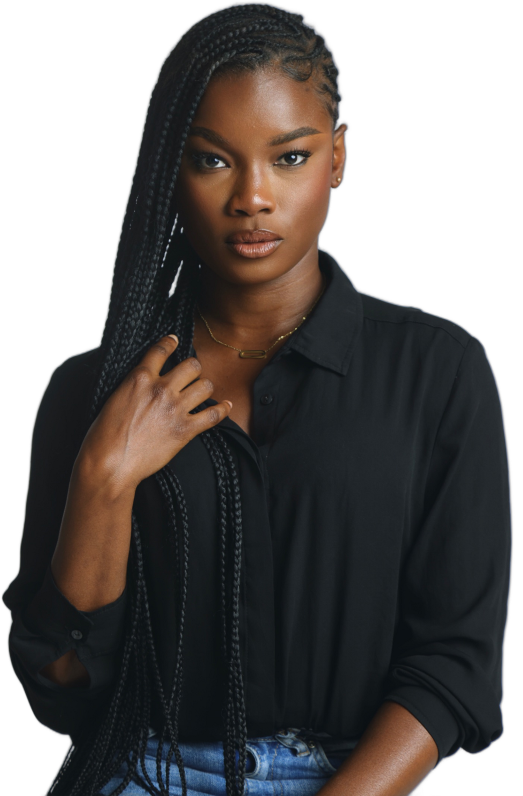

<!DOCTYPE html>
<html lang="fr"><head><meta charset="UTF-8">
<!-- Vidéo « Alicia Kouadio — La juste mesure » (13/11/2026, demande de la propriétaire) : une HISTOIRE racontée sur
     une mannequin de 1,69 m, en motion design de luxe (noir profond, or champagne, ivoire), différente des films
     précédents : chaque phrase de la voix a son illustration animée (fente de lumière, toise dorée, croquis de mode,
     triptyque qui se déplie, podium en perspective, iris d'objectif, viseur de caméra, couleur qui prend vie,
     typographie remplie de photos, cartes des métiers, porte de lumière, compcard animée, kt de fin).
     Voix « Victoria » fournie par la propriétaire (ElevenLabs), texte voix-alicia.json calé par aligner-voix.py ;
     musique et effets sonores ElevenLabs (alicia/musique.mp3, sons/a-*.mp3). Photos : son book du site (alicia/),
     détourages rembg (alicia/d-*.png). Moteur PROPRE à ce film (window.rendre(t), window.EFFETS, window.MANQUES), lu
     par fabrique-talons.js :
       FILM=film-alicia.html NOM=alicia-kouadio SONS=1 VOIX=… MUSIQUE=… IMAGES=… node fabrique-talons.js [vertical|large] -->
<title>Film Alicia Kouadio</title>
<script src="timing-alicia.js"></script>
<style>
/* polices du site (mêmes que moteur-film.css, sans ses autres styles) */
@font-face { font-family: 'Cormorant Garamond'; font-weight: 500; src: url('../../assets/polices/cormorant-garamond-latin-500-normal.woff2'); }
@font-face { font-family: 'Cormorant Garamond'; font-weight: 500; src: url('../../assets/polices/cormorant-garamond-latin-ext-500-normal.woff2'); unicode-range: U+0100-024F; }
@font-face { font-family: 'Cormorant Garamond'; font-weight: 400; font-style: italic; src: url('../../assets/polices/cormorant-garamond-latin-400-italic.woff2'); }
@font-face { font-family: 'Cormorant Garamond'; font-weight: 600; src: url('../../assets/polices/cormorant-garamond-latin-600-normal.woff2'); }
@font-face { font-family: 'Work Sans'; font-weight: 400; src: url('../../assets/polices/work-sans-latin-400-normal.woff2'); }
@font-face { font-family: 'Work Sans'; font-weight: 500; src: url('../../assets/polices/work-sans-latin-500-normal.woff2'); }
@font-face { font-family: 'Work Sans'; font-weight: 600; src: url('../../assets/polices/work-sans-latin-600-normal.woff2'); }
@font-face { font-family: 'Work Sans'; font-weight: 700; src: url('../../assets/polices/work-sans-latin-700-normal.woff2'); }
@font-face { font-family: 'Montserrat'; font-weight: 700; src: url('../../assets/polices/montserrat-latin-700-normal.woff2'); }
@font-face { font-family: 'Montserrat'; font-weight: 700; src: url('../../assets/polices/montserrat-latin-ext-700-normal.woff2'); unicode-range: U+0100-024F; }
@font-face { font-family: 'Big Shoulders Display'; font-weight: 800; src: url('../../assets/polices/big-shoulders-display-latin-800-normal.woff2'); }
@font-face { font-family: 'Big Shoulders Display'; font-weight: 800; src: url('../../assets/polices/big-shoulders-display-latin-ext-800-normal.woff2'); unicode-range: U+0100-024F; }
:root { --W: 1080px; --H: 1920px; }
body.large { --W: 1920px; --H: 1080px; }
* { box-sizing: border-box; margin: 0; padding: 0; }
html, body { width: var(--W); height: var(--H); overflow: hidden; background: #060607; }
body { font-family: 'Work Sans', sans-serif; color: #fff; }
#film { position: relative; width: var(--W); height: var(--H); overflow: hidden; }
:root { --or: #D8B878; --or-clair: #F3DFAE; --or-fonce: #9C7A3C; --ivoire: #F5EEE3; --noir: #060607; --rouge-ma2m: #7C2128; }
#film { background: var(--noir); }
.sc { position: absolute; inset: 0; overflow: hidden; visibility: hidden; background: radial-gradient(ellipse at 50% 38%, #18171A 0%, #09090B 55%, #000 100%); }
.abs { position: absolute; }
.img { position: absolute; background-size: cover; background-position: 50% 30%; will-change: transform; }
.grade { filter: contrast(1.08) saturate(1.06) brightness(0.92); }
.serif { font-family: 'Cormorant Garamond', serif; font-weight: 500; }
.ital { font-family: 'Cormorant Garamond', serif; font-style: italic; font-weight: 400; }
.caps { font-family: 'Work Sans', sans-serif; font-weight: 600; text-transform: uppercase; letter-spacing: 0.38em; }
.or { color: var(--or); }
.centre { left: 0; right: 0; text-align: center; }
.trait { stroke: var(--or); fill: none; stroke-width: 2.2; stroke-linecap: round; stroke-linejoin: round; }
.lettre { display: inline-block; will-change: transform, opacity; }
.cadre-or { position: absolute; inset: 26px; border: 1px solid rgba(216,184,120,0.35); pointer-events: none; z-index: 60; }
body.large .cadre-or { inset: 22px; }
#grain { position: absolute; inset: -50%; z-index: 70; pointer-events: none; opacity: 0.075; mix-blend-mode: overlay; }
#poussiere { position: absolute; inset: 0; z-index: 55; pointer-events: none; }
#vignette { position: absolute; inset: 0; z-index: 54; pointer-events: none; background: radial-gradient(ellipse at 50% 45%, rgba(0,0,0,0) 55%, rgba(0,0,0,0.55) 100%); }
#balayage { position: absolute; inset: -20%; z-index: 58; pointer-events: none; opacity: 0; background: linear-gradient(105deg, rgba(243,223,174,0) 40%, rgba(243,223,174,0.55) 49%, rgba(255,255,255,0.8) 50%, rgba(243,223,174,0.55) 51%, rgba(243,223,174,0) 60%); mix-blend-mode: screen; }
#flash { position: absolute; inset: 0; z-index: 59; background: #fff; opacity: 0; pointer-events: none; }
/* sous-titres (téléphone sans le son) : au-dessus de la zone des boutons de TikTok */
#st { position: absolute; z-index: 57; left: 90px; right: 90px; text-align: center; font: 500 44px/1.32 'Work Sans', sans-serif; color: rgba(245,238,227,0.9); text-shadow: 0 3px 18px rgba(0,0,0,0.9); }
body:not(.large) #st { top: 1395px; }
body.large #st { bottom: 70px; left: 260px; right: 260px; font-size: 38px; }
#st span { display: inline-block; margin: 0 0.12em; transition: none; }
#st-fond { position: absolute; z-index: 56; left: 0; right: 0; pointer-events: none; background: linear-gradient(180deg, rgba(0,0,0,0), rgba(0,0,0,0.62) 45%, rgba(0,0,0,0)); }
body:not(.large) #st-fond { top: 1300px; height: 380px; }
body.large #st-fond { bottom: 0; height: 260px; }
.badge { position: absolute; border: 1.5px solid var(--or); color: var(--or); font: 600 26px 'Work Sans'; letter-spacing: 0.4em; text-transform: uppercase; padding: 14px 22px 14px 32px; }
.kt { position: absolute; overflow: hidden; border-radius: 4px; box-shadow: 0 50px 90px -30px rgba(0,0,0,0.95), 0 0 0 1px rgba(216,184,120,0.4); background: #111; }
.lab { position: absolute; left: 0; right: 0; text-align: center; font: 600 30px 'Work Sans'; letter-spacing: 0.42em; text-transform: uppercase; color: var(--or); }
</style></head>
<body>
<div id="film">
  <div id="scenes"></div>
  <canvas id="poussiere"></canvas>
  <div id="vignette"></div>
  <div id="st-fond"></div>
  <div id="st"></div>
  <div id="balayage"></div>
  <div id="flash"></div>
  <div class="cadre-or"></div>
  <div id="grain"></div>
</div>
<script>
'use strict';
if (/format=large/.test(location.search)) document.body.classList.add('large');
const LARGE = document.body.classList.contains('large'), W = LARGE ? 1920 : 1080, H = LARGE ? 1080 : 1920;
const V = (v, l) => (LARGE ? l : v);  // valeur pour le format vertical, ou horizontal
const T = window.T, MOTS = T.mots, PH = T.phrases;
window.MANQUES = [];
// ---------- outils ----------
const cl = (x) => (x < 0 ? 0 : x > 1 ? 1 : x);
const io = (x) => { x = cl(x); return x * x * (3 - 2 * x); };
const out = (x) => { x = cl(x); return 1 - Math.pow(1 - x, 3); };
const expo = (x) => { x = cl(x); return x === 1 ? 1 : 1 - Math.pow(2, -10 * x); };
const back = (x) => { x = cl(x); const c = 1.5; return 1 + (c + 1) * Math.pow(x - 1, 3) + c * Math.pow(x - 1, 2); };
const k = (t, a, d) => cl((t - a) / d);
const mix = (a, b, x) => a + (b - a) * x;
const norm = (m) => m.toLowerCase().normalize('NFD').replace(/[̀-ͯ]/g, '').replace(/[’']/g, "'").replace(/^(?:[ldjmnstc]|qu)'/, '');
// instant où la voix dit le mot (n-ième occurrence dans la phrase)
function w(cle, mot, n) {
  const l = (MOTS[cle] || []).filter((x) => norm(x[0]) === norm(mot));
  const x = l[n || 0];
  if (!x) { window.MANQUES.push(cle + ':' + mot); return PH[cle] ? PH[cle][0] : 0; }
  return x[1];
}
const debut = (cle) => PH[cle][0], fin = (cle) => PH[cle][1];
function style(el, o) {
  if (!el) return;
  const tr = [];
  if (o.x !== undefined || o.y !== undefined) tr.push('translate(' + (o.x || 0) + 'px,' + (o.y || 0) + 'px)');
  if (o.z !== undefined) tr.push('translateZ(' + o.z + 'px)');
  if (o.rx !== undefined) tr.push('rotateX(' + o.rx + 'deg)');
  if (o.ry !== undefined) tr.push('rotateY(' + o.ry + 'deg)');
  if (o.r !== undefined) tr.push('rotate(' + o.r + 'deg)');
  if (o.s !== undefined) tr.push('scale(' + o.s + ')');
  if (tr.length) el.style.transform = tr.join(' ');
  if (o.o !== undefined) el.style.opacity = o.o;
  if (o.b !== undefined) el.style.filter = o.b > 0.05 ? 'blur(' + o.b + 'px)' : '';
  if (o.clip !== undefined) { el.style.clipPath = o.clip; el.style.webkitClipPath = o.clip; }
}
// tracé SVG qui se dessine (pathLength="1")
const dessine = (els, x) => els.forEach((p) => { p.style.strokeDasharray = '1 1'; p.style.strokeDashoffset = String(1 - cl(x)); });
// lettres séparées pour les animer une à une
const lettres = (txt) => [...txt].map((c) => '<span class="lettre">' + (c === ' ' ? '&nbsp;' : c) + '</span>').join('');
const photo = (n) => 'alicia/' + n + '.jpg';
const ICONES = {
  plume: '<path pathLength="1" d="M80 10 C44 18 24 48 20 88"/><path pathLength="1" d="M80 10 C78 40 60 64 28 74"/><path pathLength="1" d="M34 62 L58 46 M40 52 L66 34 M30 72 L50 60"/>',
  eclair: '<path pathLength="1" d="M58 6 L26 54 L50 54 L40 94 L76 40 L52 40 Z"/>',
  cintre: '<path pathLength="1" d="M50 34 C50 22 64 22 64 30 C64 37 55 38 50 44 L10 70 C6 73 8 78 13 78 L87 78 C92 78 94 73 90 70 L50 44"/>',
  diamant: '<path pathLength="1" d="M20 38 L34 20 L66 20 L80 38 L50 84 Z M20 38 L80 38 M40 38 L50 84 L60 38 M34 20 L40 38 M66 20 L60 38"/>',
  appareil: '<path pathLength="1" d="M12 34 L30 34 L36 22 L64 22 L70 34 L88 34 L88 80 L12 80 Z"/><circle pathLength="1" cx="50" cy="56" r="15"/><circle pathLength="1" cx="50" cy="56" r="6"/>',
  ciseaux: '<circle pathLength="1" cx="30" cy="76" r="11"/><circle pathLength="1" cx="70" cy="76" r="11"/><path pathLength="1" d="M37 67 L74 14 M63 67 L26 14"/>',
  crayon: '<path pathLength="1" d="M18 84 L26 62 L70 18 L84 32 L40 76 Z M26 62 L40 76 M62 26 L76 40"/>',
  etiquette: '<path pathLength="1" d="M10 50 L44 16 L86 16 L86 58 L52 92 Z"/><circle pathLength="1" cx="71" cy="31" r="6"/>',
  oeil: '<path pathLength="1" d="M8 50 C28 22 72 22 92 50 C72 78 28 78 8 50 Z"/><circle pathLength="1" cx="50" cy="50" r="13"/>',
  main: '<path pathLength="1" d="M34 90 L30 56 C29 50 36 48 38 54 L40 64 L40 22 C40 16 48 16 48 22 L48 54 L48 14 C48 8 56 8 56 14 L56 54 L56 20 C56 14 64 14 64 20 L64 56 L64 32 C64 26 72 26 72 32 L72 64 C72 78 66 90 60 90 Z"/>',
  sourire: '<circle pathLength="1" cx="50" cy="50" r="40"/><path pathLength="1" d="M30 58 C38 72 62 72 70 58"/><path pathLength="1" d="M36 40 L36 42 M64 40 L64 42"/>'
};
const icone = (nom, taille, cls) => '<svg class="' + (cls || '') + '" viewBox="0 0 100 100" width="' + taille + '" height="' + taille + '"><g class="trait">' + ICONES[nom] + '</g></svg>';

// ---------- effets sonores (fabrique-talons.js les mixe : sons/<son>.mp3, volume vol) ----------
const EFFETS = [];
const son = (t, nom, vol) => EFFETS.push({ t: +Math.max(0, t).toFixed(3), son: 'a-' + nom, vol: vol || 0.5 });

// ---------- scènes ----------
const racine = document.getElementById('scenes');
const SC = [];
// id, début, html, mise à jour (t absolu, élément), entrée (fondu | iris | volet | zoom | rideau | fente), sous-titres ?
function scene(o) {
  const el = document.createElement('section'); el.className = 'sc'; el.id = 's-' + o.id; el.innerHTML = o.html; racine.appendChild(el);
  o.el = el; o.q = (s) => el.querySelector(s); o.qa = (s) => [...el.querySelectorAll(s)];
  if (o.prep) o.prep(o);
  SC.push(o); return o;
}

// 1. OUVERTURE — une fente de lumière s'ouvre sur son visage
scene({ id: 'ouverture', de: 0, entree: 'aucune',
  html: '<div class="img grade" id="o-img" style="inset:0;background-image:url(' + photo('p05') + ');background-position:50% 30%"></div>' +
    '<div class="abs" id="o-ligne" style="left:50%;top:' + V(820, 470) + 'px;height:2px;width:0;background:linear-gradient(90deg,transparent,var(--or-clair),transparent);box-shadow:0 0 30px 6px rgba(243,223,174,0.55)"></div>' +
    '<div class="abs caps centre" id="o-1" style="top:' + V(300, 150) + 'px;font-size:' + V(30, 26) + 'px;color:var(--ivoire)">Il y a des femmes</div>' +
    '<div class="abs ital centre" id="o-2" style="top:' + V(1080, 760) + 'px;font-size:' + V(120, 110) + 'px;color:var(--ivoire)">' + lettres('que l’on remarque.') + '</div>',
  prep: (s) => { son(0.2, 'montee', 0.45); son(0.95, 'eclat', 0.35); son(debut('ouverture') + 0.05, 'souffle', 0.5); },
  maj: (t, s) => {
    const a = debut('ouverture');
    const lg = expo(k(t, 0.25, 0.9)), ouv = out(k(t, a - 0.05, 1.6));
    style(s.q('#o-ligne'), { o: 1 - ouv * 0.9 }); s.q('#o-ligne').style.width = (lg * V(80, 60)) + '%'; s.q('#o-ligne').style.left = (50 - lg * V(40, 30)) + '%';
    const c = V(820, 470) / H * 100, demi = ouv * 60;
    style(s.q('#o-img'), { clip: 'inset(' + Math.max(0, c - demi) + '% 0 ' + Math.max(0, 100 - c - demi) + '% 0)', s: mix(1.28, 1.08, io(k(t, a, 4))), b: mix(14, 0, out(k(t, a, 1.4))) });
    style(s.q('#o-1'), { o: out(k(t, a, 0.8)) * (1 - k(t, w('ouverture', 'que') + 0.2, 0.6) * 0.4), y: mix(30, 0, out(k(t, a, 1))) });
    const t0 = w('ouverture', 'que');
    s.qa('#o-2 .lettre').forEach((l, i) => style(l, { o: out(k(t, t0 + i * 0.045, 0.6)), y: mix(40, 0, out(k(t, t0 + i * 0.045, 0.8))), b: mix(10, 0, out(k(t, t0 + i * 0.045, 0.6))) }));
  } });

// 2. OUBLI — elle s'avance, auréolée d'or
scene({ id: 'oubli', de: debut('oubli') - 0.15, entree: 'iris',
  html: '<div class="img" id="b-fond" style="inset:-5%;background-image:url(' + photo('p01') + ');filter:blur(26px) brightness(0.35) saturate(0.8)"></div>' +
    '<svg class="abs" id="b-halo" viewBox="0 0 100 100" style="left:' + V(90, 760) + 'px;top:' + V(440, 60) + 'px;width:' + V(900, 900) + 'px;height:' + V(900, 900) + 'px"><circle pathLength="1" cx="50" cy="50" r="46" class="trait" style="stroke-width:0.35"/><circle pathLength="1" cx="50" cy="50" r="40" class="trait" style="stroke-width:0.18;opacity:0.6"/></svg>' +
    '' +
    '<div class="abs ital" id="b-1" style="left:' + V(80, 120) + 'px;top:' + V(200, 260) + 'px;font-size:' + V(84, 92) + 'px;color:var(--ivoire)">que l’on découvre</div>' +
    '<div class="abs ital" id="b-2" style="left:' + V(80, 120) + 'px;top:' + V(310, 380) + 'px;font-size:' + V(84, 92) + 'px;color:var(--ivoire)">et que l’on <span class="or">n’oublie plus.</span></div>',
  prep: (s) => { son(s.de, 'souffle', 0.45); son(w('oubli', "n'oublie"), 'eclat', 0.35); },
  maj: (t, s) => {
    const a = s.de, d = w('oubli', 'découvre'), n = w('oubli', 'et', 1);
    style(s.q('#b-fond'), { s: mix(1.1, 1.0, io(k(t, a, 5))) });
    const img = s.q('#b-det'); img.style.marginLeft = (-img.offsetWidth / 2 + V(60, 260)) + 'px';
    style(img, { y: mix(120, 0, out(k(t, a, 2.2))), s: mix(0.94, 1.02, io(k(t, a, 5))), o: out(k(t, a, 0.8)) });
    const halo = s.q('#b-halo'); dessine([...halo.querySelectorAll('circle')], io(k(t, a + 0.3, 2.4))); style(halo, { r: (t - a) * 6 });
    style(s.q('#b-1'), { o: out(k(t, d - 0.1, 0.7)), x: mix(-40, 0, out(k(t, d - 0.1, 1))) });
    style(s.q('#b-2'), { o: out(k(t, n - 0.1, 0.7)), x: mix(-40, 0, out(k(t, n - 0.1, 1))) });
  } });

// 3. NOM — ALICIA, lettres remplies de photo, KOUADIO, 25 ANS
scene({ id: 'nom', de: debut('nom') - 0.2, entree: 'volet', sansSt: true,
  html: '<div class="img" id="n-fond" style="inset:-4%;background-image:url(' + photo('p12') + ');filter:brightness(0.22) saturate(0.7) blur(3px)"></div>' +
    '<div class="abs caps centre or" id="n-0" style="top:' + V(560, 250) + 'px;font-size:' + V(28, 26) + 'px">Elle s’appelle</div>' +
    '<div class="abs serif centre" id="n-1" style="top:' + V(640, 300) + 'px;font-size:' + V(270, 300) + 'px;line-height:1;letter-spacing:0.02em;perspective:900px">' +
      [...'ALICIA'].map((c) => '<span class="lettre" style="background:url(' + photo('p12') + ') 50% 40%/' + V(1100, 1500) + 'px auto;-webkit-background-clip:text;background-clip:text;color:transparent;-webkit-text-stroke:1px rgba(243,223,174,0.5)">' + c + '</span>').join('') + '</div>' +
    '<div class="abs caps centre" id="n-2" style="top:' + V(935, 630) + 'px;font-size:' + V(64, 66) + 'px;color:var(--ivoire);font-weight:500">Kouadio</div>' +
    '<div class="abs" id="n-3" style="left:50%;top:' + V(1100, 760) + 'px;width:220px;height:220px;margin-left:-110px">' +
      '<svg viewBox="0 0 100 100" width="220" height="220" style="position:absolute;inset:0"><circle pathLength="1" cx="50" cy="50" r="46" class="trait" style="stroke-width:1"/></svg>' +
      '<div class="serif or" id="n-age" style="position:absolute;inset:0;display:flex;flex-direction:column;align-items:center;justify-content:center;font-size:92px;line-height:0.9">25<small style="font:600 20px Work Sans;letter-spacing:0.4em;margin-top:10px;margin-left:8px">ANS</small></div></div>',
  prep: (s) => { son(s.de, 'souffle', 0.4); son(w('nom', 'alicia') - 0.05, 'impact', 0.55); son(w('nom', 'kouadio'), 'soie', 0.5); son(w('nom', '25'), 'declic', 0.45); },
  maj: (t, s) => {
    const a = w('nom', 'alicia'), b = w('nom', 'kouadio'), c = w('nom', '25');
    style(s.q('#n-fond'), { s: mix(1.12, 1.0, io(k(t, s.de, 4))) });
    style(s.q('#n-0'), { o: out(k(t, s.de + 0.1, 0.6)) });
    s.qa('#n-1 .lettre').forEach((l, i) => { const x = k(t, a - 0.15 + i * 0.07, 0.75); style(l, { o: out(x), y: mix(-70, 0, back(x)), rx: mix(-80, 0, out(x)), b: mix(8, 0, out(x)) }); l.style.backgroundPosition = (50 + (t - a) * 3) + '% 40%'; });
    const xb = k(t, b - 0.1, 1.1); style(s.q('#n-2'), { o: out(xb) }); s.q('#n-2').style.letterSpacing = mix(1.1, 0.42, out(xb)) + 'em';
    const xc = k(t, c - 0.1, 0.9); dessine(s.qa('#n-3 circle'), out(xc)); style(s.q('#n-age'), { o: out(k(t, c, 0.5)), s: mix(0.6, 1, back(k(t, c, 0.6))) });
  } });

// 4. TAILLE — toise dorée, 1,69 m, grâce et énergie
const SOL = V(1290, 1000), PXCM = V(5.6, 4.3);  // sol de la toise et pixels par centimètre
scene({ id: 'taille', de: debut('taille') - 0.25, entree: 'fondu',
  html: '<div class="abs" style="left:0;right:0;top:' + SOL + 'px;bottom:0;background:linear-gradient(180deg,rgba(216,184,120,0.10),rgba(0,0,0,0) 60%)"></div>' +
    '<div class="abs" id="t-toise" style="left:' + V(150, 520) + 'px;top:' + (SOL - 190 * PXCM) + 'px;height:' + 190 * PXCM + 'px;width:2px;background:var(--or);transform-origin:50% 100%"></div>' +
    Array.from({ length: 20 }, (_, i) => '<div class="abs t-cran" style="left:' + V(150, 520) + 'px;top:' + (SOL - i * 10 * PXCM) + 'px;height:1.5px;width:' + (i % 5 === 0 ? 34 : 16) + 'px;background:var(--or)">' + (i % 5 === 0 ? '<b style="position:absolute;left:44px;top:-12px;font:500 20px Work Sans;color:var(--or);letter-spacing:0.1em">' + i * 10 + '</b>' : '') + '</div>').join('') +
    '' +
    '' +
    '<div class="abs" id="t-laser" style="left:' + V(140, 510) + 'px;width:' + V(820, 980) + 'px;height:2px;background:linear-gradient(90deg,var(--or-clair),rgba(243,223,174,0));box-shadow:0 0 16px rgba(243,223,174,0.8)"></div>' +
    '<div class="abs serif" id="t-mesure" style="left:' + V(560, 1180) + 'px;top:' + V(330, 170) + 'px;font-size:' + V(190, 190) + 'px;line-height:1;color:var(--ivoire)"><span id="t-n">0,00</span><small style="font-size:0.42em;color:var(--or)"> m</small></div>' +
    '<div class="abs caps or" id="t-lab" style="left:' + V(570, 1190) + 'px;top:' + V(540, 380) + 'px;font-size:24px">La juste mesure</div>' +
    '<div class="abs" id="t-grace" style="left:' + V(590, 1190) + 'px;top:' + V(700, 520) + 'px;display:flex;align-items:center;gap:26px">' + icone('plume', V(110, 100)) + '<span class="ital" style="font-size:' + V(84, 80) + 'px;color:var(--ivoire)">grâce</span></div>' +
    '<div class="abs" id="t-energie" style="left:' + V(590, 1190) + 'px;top:' + V(870, 680) + 'px;display:flex;align-items:center;gap:26px">' + icone('eclair', V(110, 100)) + '<span class="ital" style="font-size:' + V(84, 80) + 'px;color:var(--ivoire)">énergie</span></div>',
  prep: (s) => { son(s.de, 'montee', 0.4); son(w('taille', '69'), 'eclat', 0.4); son(w('taille', 'grâce'), 'soie', 0.45); son(w('taille', "l'énergie"), 'souffle', 0.5); },
  maj: (t, s) => {
    const a = s.de + 0.1, m = w('taille', '1');
    style(s.q('#t-toise'), { s: 1 }); s.q('#t-toise').style.transform = 'scaleY(' + expo(k(t, a, 1.1)) + ')';
    s.qa('.t-cran').forEach((c, i) => style(c, { o: out(k(t, a + i * 0.04, 0.4)) }));
    // elle apparaît du sol vers le haut, le laser monte avec sa tête
    const x = io(k(t, m - 0.2, 1.5)), haut = SOL - 169 * PXCM * x;
    style(s.q('#t-det'), { clip: 'inset(' + ((1 - x) * 100) + '% 0 0 0)' }); style(s.q('#t-reflet'), { clip: 'inset(0 0 ' + ((1 - x) * 100) + '% 0)' });
    style(s.q('#t-laser'), { y: haut, o: out(k(t, m - 0.2, 0.3)) * (1 - 0.5 * k(t, m + 2, 1)) });
    s.q('#t-n').textContent = (1.69 * x).toFixed(2).replace('.', ',');
    style(s.q('#t-mesure'), { o: out(k(t, m - 0.2, 0.5)), s: 1 + 0.06 * (1 - out(k(t, m + 1.2, 0.5))) * k(t, m + 1.1, 0.1) });
    style(s.q('#t-lab'), { o: out(k(t, m + 1.3, 0.8)) }); s.q('#t-lab').style.letterSpacing = mix(0.8, 0.38, out(k(t, m + 1.3, 1.2))) + 'em';
    const g = w('taille', 'grâce'), e = w('taille', "l'énergie");
    style(s.q('#t-grace'), { o: out(k(t, g - 0.15, 0.5)), x: mix(50, 0, out(k(t, g - 0.15, 0.8))) }); dessine(s.qa('#t-grace path'), k(t, g - 0.15, 1));
    style(s.q('#t-energie'), { o: out(k(t, e - 0.15, 0.5)), x: mix(50, 0, out(k(t, e - 0.15, 0.8))) }); dessine(s.qa('#t-energie path'), k(t, e - 0.15, 0.8));
  } });

// 5. PRÉSENCE — gros plan, le mot géant en filigrane
scene({ id: 'presence', de: debut('presence') - 0.2, entree: 'zoom',
  html: '<div class="img grade" id="p-img" style="inset:0;background-image:url(' + photo('p13') + ');background-position:50% 25%"></div>' +
    '<div class="abs" style="inset:0;background:linear-gradient(180deg,rgba(0,0,0,0.1),rgba(0,0,0,0.65))"></div>' +
    '<div class="abs serif centre" id="p-mot" style="top:' + V(140, 60) + 'px;font-size:' + V(168, 300) + 'px;color:transparent;-webkit-text-stroke:2px rgba(243,223,174,0.85);letter-spacing:0.05em">PRÉSENCE</div>' +
    '<div class="abs ital centre" id="p-phr" style="top:' + V(1080, 760) + 'px;font-size:' + V(70, 72) + 'px;color:var(--ivoire);padding:0 70px">qui ne demande pas<br>la permission <span class="or">d’exister.</span></div>',
  prep: (s) => { son(w('presence', 'présence') - 0.1, 'impact', 0.45); },
  maj: (t, s) => {
    const p = w('presence', 'présence'), q = w('presence', 'qui');
    style(s.q('#p-img'), { s: mix(1.18, 1.04, io(k(t, s.de, 4))), x: mix(-20, 20, io(k(t, s.de, 4))) });
    const x = k(t, p - 0.15, 1.4); style(s.q('#p-mot'), { o: out(x) * 0.95, s: mix(1.25, 1, out(x)), b: mix(12, 0, out(x)) }); s.q('#p-mot').style.letterSpacing = mix(0.3, 0.05, out(x)) + 'em';
    style(s.q('#p-phr'), { o: out(k(t, q - 0.1, 0.8)), y: mix(30, 0, out(k(t, q - 0.1, 1))) });
  } });

// 6. CRÉATION — le croquis de mode se dessine, puis la photo l'habite
scene({ id: 'creation', de: debut('creation') - 0.2, entree: 'volet',
  html: '<div class="abs" id="c-papier" style="inset:0;background:radial-gradient(ellipse at 50% 40%,#1C1A17,#08080A 70%)"></div>' +
    '<div class="kt" id="c-photo" style="left:' + V(190, 1080) + 'px;top:' + V(220, 110) + 'px;width:' + V(700, 600) + 'px;height:' + V(1040, 840) + 'px;background:url(' + photo('p07') + ') 50% 25%/cover"></div>' +
    '<svg class="abs" id="c-croquis" viewBox="0 0 200 500" style="left:' + V(290, 300) + 'px;top:' + V(220, 110) + 'px;width:' + V(500, 340) + 'px;height:' + V(1250, 850) + 'px"><g class="trait" style="stroke-width:1.4">' +
      '<ellipse pathLength="1" cx="100" cy="40" rx="15" ry="19"/><path pathLength="1" d="M95 59 L94 72 M105 59 L106 72"/>' +
      '<path pathLength="1" d="M70 84 C86 75 114 75 130 84 L121 150 C113 170 111 190 113 210"/><path pathLength="1" d="M70 84 L79 150 C87 170 89 190 87 210"/>' +
      '<path pathLength="1" d="M87 210 C83 300 70 380 36 472 C80 486 120 486 164 472 C130 380 117 300 113 210"/>' +
      '<path pathLength="1" d="M70 84 C57 120 55 160 64 202 M130 84 C143 120 145 160 136 202"/><path pathLength="1" d="M100 232 C96 320 90 400 80 470 M107 262 C111 340 118 410 128 472"/></g></svg>' +
    '<div class="abs ital" id="c-txt" style="left:' + V(80, 760) + 'px;' + V('top:1300px;right:80px;text-align:center', 'top:400px;width:300px') + ';font-size:' + V(76, 66) + 'px;color:var(--ivoire)">porter une <span class="or">création</span></div>',
  prep: (s) => { son(s.de, 'pli', 0.4); son(w('creation', 'porter') - 0.1, 'soie', 0.5); },
  maj: (t, s) => {
    dessine(s.qa('#c-croquis path, #c-croquis ellipse'), io(k(t, s.de + 0.1, 1.5)));
    const p = w('creation', 'porter');
    if (!LARGE) { style(s.q('#c-croquis'), { o: 1 - io(k(t, p, 0.8)) * 0.85 }); style(s.q('#c-photo'), { clip: 'inset(' + (100 - io(k(t, p - 0.2, 1.1)) * 100) + '% 0 0 0)', s: mix(1.06, 1, io(k(t, p, 2))) }); }
    else { style(s.q('#c-photo'), { clip: 'inset(0 ' + (100 - io(k(t, p - 0.2, 1.1)) * 100) + '% 0 0)', s: mix(1.06, 1, io(k(t, p, 2))) }); style(s.q('#c-croquis'), { x: mix(160, 0, out(k(t, s.de, 1.2))) }); }
    style(s.q('#c-txt'), { o: out(k(t, p - 0.1, 0.8)), y: mix(30, 0, out(k(t, p - 0.1, 1))) });
  } });

// 7. ELLE LUI DONNE — triptyque qui se déplie : attitude, histoire, présence
const TRI = [['attitude', 'p04', 0], ['histoire', 'p09', 0], ['présence', 'p10', 0]];
scene({ id: 'donne', de: debut('donne') - 0.2, entree: 'fondu',
  html: '<div class="abs caps centre or" id="d-0" style="top:' + V(250, 110) + 'px;font-size:' + V(28, 26) + 'px">Elle lui donne</div>' +
    '<div class="abs" style="left:' + V(50, 160) + 'px;right:' + V(50, 160) + 'px;top:' + V(340, 190) + 'px;height:' + V(900, 700) + 'px;display:flex;gap:' + V(20, 30) + 'px;perspective:1600px">' +
    TRI.map(([m, p], i) => '<div class="d-pan" style="flex:1;position:relative;transform-origin:' + (i === 0 ? '100%' : i === 2 ? '0%' : '50%') + ' 50%">' +
      '<div class="kt" style="inset:0;background:url(' + photo(p) + ') 50% 25%/cover"></div>' +
      '<div class="lab" style="bottom:' + V(-90, -80) + 'px;font-size:' + V(26, 28) + 'px">' + m + '</div></div>').join('') + '</div>',
  prep: (s) => { TRI.forEach(([m], i) => son(w('donne', m) - 0.12, 'pli', 0.5)); son(w('donne', 'présence'), 'eclat', 0.3); },
  maj: (t, s) => {
    style(s.q('#d-0'), { o: out(k(t, s.de, 0.6)) });
    s.qa('.d-pan').forEach((p, i) => {
      const x = k(t, w('donne', TRI[i][0]) - 0.3, 0.9);
      style(p, { o: out(k(t, w('donne', TRI[i][0]) - 0.3, 0.3)), ry: mix(i === 0 ? -95 : 95, 0, out(x)), s: 1 });
      p.querySelector('.kt').style.backgroundPosition = '50% ' + mix(35, 20, io(k(t, s.de, 6))) + '%';
      style(p.querySelector('.lab'), { o: out(k(t, w('donne', TRI[i][0]), 0.6)) });
    });
  } });

// 8. PODIUM — piste en perspective (dessinée en 2D), rangées de lumières qui défilent vers nous, elle s'avance
const HZ = V(760, 430);  // ligne d'horizon de la piste
scene({ id: 'podium', de: debut('podium') - 0.2, entree: 'rideau',
  html: '<div class="abs" style="inset:0;background:radial-gradient(ellipse at 50% ' + V(30, 25) + '%,#2e2922,#09090b 60%)"></div>' +
    '<div class="abs" id="r-piste" style="inset:0;clip-path:polygon(' + V('44% ', '46% ') + HZ + 'px,' + V('56% ', '54% ') + HZ + 'px,' + V('112% ', '86% ') + '100%,' + V('-12% ', '14% ') + '100%);background:linear-gradient(180deg,#2a2824,#141416 35%,#3a3731)"></div>' +
    '<div class="abs" id="r-reflet" style="inset:0;clip-path:polygon(' + V('44% ', '46% ') + HZ + 'px,' + V('56% ', '54% ') + HZ + 'px,' + V('112% ', '86% ') + '100%,' + V('-12% ', '14% ') + '100%);background:radial-gradient(ellipse at 50% 100%,rgba(243,223,174,0.18),rgba(0,0,0,0) 60%)"></div>' +
    '<canvas class="abs" id="r-lums" width="' + W + '" height="' + H + '" style="inset:0"></canvas>' +
    '<div class="abs r-spot" style="left:' + V(140, 560) + 'px;top:-120px;width:' + V(420, 420) + 'px;height:' + V(1700, 1250) + 'px;background:linear-gradient(180deg,rgba(255,240,205,0.34),rgba(243,223,174,0) 90%);clip-path:polygon(44% 0,56% 0,100% 100%,0 100%);transform-origin:50% 0;mix-blend-mode:screen"></div>' +
    '<div class="abs r-spot" style="left:' + V(520, 940) + 'px;top:-120px;width:' + V(420, 420) + 'px;height:' + V(1700, 1250) + 'px;background:linear-gradient(180deg,rgba(255,240,205,0.34),rgba(243,223,174,0) 90%);clip-path:polygon(44% 0,56% 0,100% 100%,0 100%);transform-origin:50% 0;mix-blend-mode:screen"></div>' +
    '' +
    '' +
    '<div class="abs caps centre or" id="r-1" style="top:' + V(190, 70) + 'px;font-size:' + V(30, 26) + 'px">Sur un podium</div>' +
    '<div class="abs ital" id="r-2" style="' + V('left:0;right:0;text-align:center;top:1200px', 'left:1300px;top:440px') + ';font-size:' + V(84, 84) + 'px;color:var(--ivoire);text-shadow:0 2px 24px #000">son pas est <span class="or">précis.</span></div>',
  prep: (s) => { son(w('podium', 'podium') - 0.05, 'pas', 0.55); son(w('podium', 'pas') + 0.1, 'pas', 0.45); son(w('podium', 'précis'), 'flash', 0.45); },
  maj: (t, s) => {
    const lt = t - s.de, c = s.q('#r-lums').getContext('2d');
    c.clearRect(0, 0, W, H);
    // deux rangées de lumières le long des bords de la piste : profondeur z de 1 (loin) à 0 (près), elles viennent vers nous
    const x0g = W * V(0.44, 0.46), x0d = W * V(0.56, 0.54), x1g = W * V(-0.12, 0.14), x1d = W * V(1.12, 0.86);
    for (let n = 0; n < 14; n++) {
      const z = 1 - (((n / 14) + lt * 0.28) % 1), p = Math.pow(1 - z, 2.2);  // p : 0 à l'horizon, 1 au premier plan
      const y = HZ + (H - HZ) * p, r = 2 + 16 * p, al = Math.min(1, p * 3);
      [mix(x0g, x1g, p), mix(x0d, x1d, p)].forEach((x) => { const g = c.createRadialGradient(x, y, 0, x, y, r * 3.2); g.addColorStop(0, 'rgba(255,244,214,' + al + ')'); g.addColorStop(0.3, 'rgba(243,223,174,' + al * 0.6 + ')'); g.addColorStop(1, 'rgba(243,223,174,0)'); c.fillStyle = g; c.beginPath(); c.arc(x, y, r * 3.2, 0, 6.283); c.fill(); });
    }
    s.qa('.r-spot').forEach((sp, i) => style(sp, { r: Math.sin(lt * 1.2 + i * 2.2) * 8 }));
    const img = s.q('#r-det'), ref = s.q('#r-ref'), dx = -img.offsetWidth / 2 + V(0, -120);
    const av = io(k(t, s.de, 3.4)), sc = mix(0.55, 1.0, av), yy = mix(-120, 0, av);
    img.style.marginLeft = dx + 'px'; ref.style.marginLeft = dx + 'px';
    style(img, { s: sc, y: yy, o: out(k(t, s.de + 0.1, 0.6)) });
    ref.style.transform = 'translateY(' + (yy - V(1000, 800) * (1 - sc)) + 'px) scale(' + sc + ',' + (-sc) + ')'; ref.style.opacity = 0.22 * out(k(t, s.de + 0.1, 0.6));
    style(s.q('#r-1'), { o: out(k(t, s.de + 0.1, 0.6)) });
    style(s.q('#r-2'), { o: out(k(t, w('podium', 'son') - 0.1, 0.6)), y: mix(30, 0, out(k(t, w('podium', 'son') - 0.1, 0.9))) });
  },
  flash: () => w('podium', 'précis') });
// 9. OBJECTIF — l'iris de l'objectif s'ouvre sur son regard
scene({ id: 'objectif', de: debut('objectif') - 0.2, entree: 'fondu',
  html: '<div class="img grade" id="j-img" style="left:50%;top:50%;width:' + V(1104, 1058) + 'px;height:' + V(1104, 1058) + 'px;margin:' + V(-632, -529) + 'px 0 0 ' + V(-552, -529) + 'px;background-image:url(' + photo('p01') + ');background-size:' + V(1550, 1500) + 'px auto;background-position:52% 16%;border-radius:50%"></div>' +
    '<svg class="abs" id="j-iris" viewBox="-100 -100 200 200" style="left:50%;top:50%;width:' + V(1200, 1150) + 'px;height:' + V(1200, 1150) + 'px;margin:' + V(-680, -575) + 'px 0 0 ' + V(-600, -575) + 'px">' +
      '<defs><mask id="j-trou"><rect x="-100" y="-100" width="200" height="200" fill="#fff"/><circle id="j-ouv" cx="0" cy="0" r="10" fill="#000"/></mask></defs>' +
      '<g mask="url(#j-trou)">' + Array.from({ length: 8 }, (_, i) => '<path class="j-lame" d="M0 0 L-120 -30 L-100 -100 L30 -120 Z" transform="rotate(' + i * 45 + ')" fill="#0d0d0f" stroke="rgba(216,184,120,0.55)" stroke-width="0.6"/>').join('') + '</g>' +
      '<circle cx="0" cy="0" r="92" class="trait" style="stroke-width:0.6"/><circle cx="0" cy="0" r="98" class="trait" style="stroke-width:2.4;stroke:#1a1a1c"/>' +
      '<path id="j-arc" d="M -84 0 A 84 84 0 1 1 84 0 A 84 84 0 1 1 -84 0" fill="none"/>' +
      '<text style="font:600 5px Work Sans;letter-spacing:2.4px;fill:var(--or)"><textPath href="#j-arc">MA2M · 85 MM · F/1.4 · PORTRAIT · NEW FACE · ALICIA KOUADIO · 85 MM · F/1.4 · </textPath></text></svg>' +
    '<div class="abs ital centre" id="j-txt" style="top:' + V(1180, 820) + 'px;font-size:' + V(84, 76) + 'px;color:var(--ivoire)">son regard <span class="or">s’impose.</span></div>' +
    '<div class="abs caps centre or" id="j-0" style="top:' + V(190, 60) + 'px;font-size:' + V(30, 26) + 'px">Devant un objectif</div>',
  prep: (s) => { son(s.de + 0.05, 'souffle', 0.4); son(w('objectif', 'regard') - 0.08, 'declic', 0.6); },
  maj: (t, s) => {
    const r = w('objectif', 'regard');
    s.q('#j-ouv').setAttribute('r', String(mix(4, 88, io(k(t, s.de + 0.2, 1.6)))));
    style(s.q('#j-iris'), { r: (t - s.de) * 14 });
    style(s.q('#j-img'), { s: mix(1.2, 1.0, io(k(t, s.de, 3))) });
    style(s.q('#j-0'), { o: out(k(t, s.de + 0.1, 0.6)) });
    style(s.q('#j-txt'), { o: out(k(t, r - 0.1, 0.6)), y: mix(30, 0, out(k(t, r - 0.1, 0.9))) });
  },
  flash: () => w('objectif', 'regard') });

// 10. CAMÉRA — viseur, mise au point, elle se révèle en couleur
scene({ id: 'camera', de: debut('camera') - 0.2, entree: 'volet',
  html: '<div class="img" id="v-img" style="inset:0;background-image:url(' + photo('p10') + ');background-position:50% 30%"></div>' +
    '<div class="abs" id="v-ui" style="inset:' + V('140px 70px 420px', '70px 90px') + ';font:600 24px Work Sans;color:#fff;letter-spacing:0.15em">' +
      ['top:0;left:0;border-top:3px solid;border-left:3px solid', 'top:0;right:0;border-top:3px solid;border-right:3px solid', 'bottom:0;left:0;border-bottom:3px solid;border-left:3px solid', 'bottom:0;right:0;border-bottom:3px solid;border-right:3px solid'].map((c) => '<i style="position:absolute;width:70px;height:70px;' + c + '"></i>').join('') +
      '<div style="position:absolute;top:24px;left:96px;display:flex;align-items:center;gap:14px"><b id="v-rec" style="width:22px;height:22px;border-radius:50%;background:#E0242E"></b>REC</div>' +
      '<div id="v-tc" style="position:absolute;top:24px;right:96px">00:00:00:00</div>' +
      '<div style="position:absolute;bottom:24px;left:96px">4K · 24 IPS</div><div style="position:absolute;bottom:24px;right:96px">ISO 400</div>' +
      '<div id="v-mise" style="position:absolute;left:50%;top:' + V(28, 26) + '%;width:240px;height:240px;margin-left:-120px;border:2px solid var(--or-clair)"></div></div>' +
    '<div class="abs ital centre" id="v-txt" style="top:' + V(1200, 820) + 'px;font-size:' + V(84, 76) + 'px;color:var(--ivoire)">elle sait <span class="or">se révéler.</span></div>',
  prep: (s) => { son(w('camera', 'caméra') - 0.1, 'declic', 0.35); son(w('camera', 'révéler') - 0.1, 'eclat', 0.4); },
  maj: (t, s) => {
    const rv = w('camera', 'révéler'), lt = t - s.de;
    const c = io(k(t, rv - 0.3, 1.0));
    style(s.q('#v-img'), { s: mix(1.1, 1.0, io(k(t, s.de, 3))) }); s.q('#v-img').style.filter = 'grayscale(' + (1 - c) + ') contrast(' + mix(1.15, 1.08, c) + ') brightness(' + mix(0.75, 0.95, c) + ')';
    style(s.q('#v-ui'), { o: (1 - c) * out(k(t, s.de, 0.4)) });
    style(s.q('#v-rec'), { o: Math.floor(lt * 2) % 2 ? 0.25 : 1 });
    const f = Math.floor(lt * 24); s.q('#v-tc').textContent = '00:00:' + String(Math.floor(lt)).padStart(2, '0') + ':' + String(f % 24).padStart(2, '0');
    const m = out(k(t, s.de + 0.3, 0.7)); s.q('#v-mise').style.transform = 'scale(' + mix(2.4, 1, m) + ')'; s.q('#v-mise').style.borderColor = m >= 1 ? '#7CFC9A' : 'var(--or-clair)';
    style(s.q('#v-txt'), { o: out(k(t, w('camera', 'elle') - 0.1, 0.6)), y: mix(30, 0, out(k(t, w('camera', 'elle') - 0.1, 0.9))) });
  } });

// 11. UN GESTE, UN REGARD, UN SOURIRE — trois médaillons, chacun avec son icône et son mot
const MED = [['geste', 'p04', '46% 55%', 'main'], ['regard', 'p05', '50% 30%', 'oeil'], ['sourire', 'p08', '50% 12%', 'sourire']];
const MT = V(400, 440);
scene({ id: 'geste', de: debut('geste') - 0.2, entree: 'fondu', sansSt: true,
  html: MED.map(([m, p, pos, ic], i) => '<div class="abs g-med" style="left:' + V([90, 590, 90][i], [210, 740, 1270][i]) + 'px;top:' + V([190, 620, 1050][i], 200) + 'px;width:' + MT + 'px;height:' + MT + 'px">' +
      '<div class="g-ph" style="position:absolute;inset:14px;border-radius:50%;background:url(' + photo(p) + ') ' + pos + '/' + V(1250, 1300) + 'px auto;filter:contrast(1.08) saturate(1.05)"></div>' +
      '<svg class="g-anneau" viewBox="0 0 100 100" style="position:absolute;inset:0"><circle pathLength="1" cx="50" cy="50" r="49" class="trait" style="stroke-width:0.7"/></svg>' +
      '<div class="g-mot" style="position:absolute;' + V((i === 1 ? 'right:calc(100% + 40px);text-align:right' : 'left:calc(100% + 40px)') + ';top:50%;margin-top:-80px;width:420px', 'left:0;right:0;top:calc(100% + 40px);text-align:center') + '">' +
        icone(ic, V(80, 76), 'g-ic') + '<div class="ital" style="font-size:' + V(84, 74) + 'px;color:var(--ivoire);line-height:1.1">un <span class="or">' + m + '</span></div></div></div>').join(''),
  prep: (s) => { MED.forEach(([m]) => son(w('geste', m) - 0.1, 'declic', 0.4)); },
  maj: (t, s) => {
    s.qa('.g-med').forEach((g, i) => {
      const a = w('geste', MED[i][0]) - 0.35, x = k(t, a, 0.9);
      style(g, { o: out(k(t, a, 0.4)), s: mix(0.6, 1, back(x)), r: mix(-12, 0, out(x)) });
      dessine([...g.querySelectorAll('.g-anneau circle')], out(k(t, a, 1.2)));
      dessine([...g.querySelectorAll('.g-ic path, .g-ic circle')], out(k(t, a + 0.2, 1)));
      style(g.querySelector('.g-mot'), { o: out(k(t, a + 0.25, 0.6)) });
      style(g.querySelector('.g-ph'), { s: mix(1.25, 1.05, io(k(t, a, 3))) });
    });
  } });
// 12. LA TENUE PREND VIE — du noir et blanc à la couleur, éclat d'or
scene({ id: 'vie', de: debut('vie') - 0.2, entree: 'fondu',
  html: '<div class="img" id="e-nb" style="inset:0;background-image:url(' + photo('p08') + ');filter:grayscale(1) brightness(0.65) contrast(1.15)"></div>' +
    '<div class="img grade" id="e-coul" style="inset:0;background-image:url(' + photo('p08') + ')"></div>' +
    '<div class="abs ital" id="e-1" style="text-shadow:0 2px 26px #000,0 0 6px #000;left:' + V(80, 120) + 'px;top:' + V(1060, 150) + 'px;font-size:' + V(80, 84) + 'px;color:var(--ivoire)">Et soudain,</div>' +
    '<div class="abs ital" id="e-2" style="text-shadow:0 2px 26px #000,0 0 6px #000;left:' + V(80, 120) + 'px;top:' + V(1160, 250) + 'px;font-size:' + V(80, 84) + 'px;color:var(--ivoire)">la tenue <span class="or">prend vie.</span></div>',
  prep: (s) => { son(s.de + 0.1, 'montee', 0.4); son(w('vie', 'vie') - 0.05, 'impact', 0.5); son(w('vie', 'vie'), 'eclat', 0.4); },
  maj: (t, s) => {
    const v = w('vie', 'vie'), x = io(k(t, v - 0.35, 1.0));
    style(s.q('#e-nb'), { s: mix(1.08, 1.0, io(k(t, s.de, 3))) });
    style(s.q('#e-coul'), { clip: 'circle(' + (x * 120) + '% at 50% 55%)', s: mix(1.08, 1.0, io(k(t, s.de, 3))) * (1 + 0.04 * Math.sin(cl((t - v) / 0.5) * Math.PI)) });
    style(s.q('#e-1'), { o: out(k(t, s.de + 0.1, 0.6)) });
    style(s.q('#e-2'), { o: out(k(t, w('vie', 'la') - 0.1, 0.6)), x: mix(-30, 0, out(k(t, w('vie', 'la') - 0.1, 0.9))) });
  },
  eclats: () => w('vie', 'vie') });

// 13. AMBITIEUSE, ÉLÉGANTE, DÉTERMINÉE — mots géants remplis de photos
const QUAL = [['ambitieuse', 'AMBITIEUSE', 'p11'], ['élégante', 'ÉLÉGANTE', 'p06'], ['déterminée', 'DÉTERMINÉE', 'p03']];
scene({ id: 'qualites', de: debut('qualites') - 0.25, entree: 'zoom', sansSt: true,
  html: '<div class="abs" style="inset:0;background:#050506"></div>' + QUAL.map(([, m, p], i) => '<div class="abs q-mot centre" style="top:' + V(560 + i * 300, 170 + i * 260) + 'px">' +
      '<span class="serif" style="font-size:' + V(176, 250) + 'px;line-height:1;background:url(' + photo(p) + ') 50% 35%/' + V(1300, 2000) + 'px auto;-webkit-background-clip:text;background-clip:text;color:transparent;-webkit-text-stroke:1px rgba(243,223,174,0.55)">' + m + '</span></div>').join('') +
    '<div class="abs" id="q-ligne" style="left:50%;top:' + V(500, 120) + 'px;width:2px;height:' + V(1000, 840) + 'px;background:linear-gradient(180deg,transparent,var(--or),transparent)"></div>',
  prep: (s) => { QUAL.forEach(([m], i) => son(w('qualites', m) - 0.08, i === 2 ? 'impact' : 'souffle', i === 2 ? 0.45 : 0.45)); },
  maj: (t, s) => {
    s.qa('.q-mot').forEach((q, i) => {
      const a = w('qualites', QUAL[i][0]) - 0.15, x = k(t, a, 0.7);
      style(q, { o: out(k(t, a, 0.35)), s: mix(1.6, 1, expo(x)), b: mix(16, 0, out(x)) });
      q.firstChild.style.backgroundPosition = (50 + (t - a) * 4) + '% 35%';
    });
    style(s.q('#q-ligne'), { o: 0.6 * out(k(t, s.de, 0.5)), s: 1 }); s.q('#q-ligne').style.transform = 'scaleY(' + io(k(t, s.de, 2.5)) + ')';
  } });

// 14. ELLE AIME — la mode, la beauté, l'image (icônes qui se dessinent)
const AIME = [['mode', 'cintre', 'la mode'], ['beauté', 'diamant', 'la beauté'], ["l'image", 'appareil', 'l’image']];
scene({ id: 'aime', de: debut('aime') - 0.2, entree: 'volet',
  html: '<div class="img" id="a-img" style="inset:-6%;background-image:url(' + photo('p11') + ');filter:brightness(0.42) saturate(0.85) blur(2px)"></div>' +
    '<div class="abs caps or" id="a-0" style="left:' + V(110, 160) + 'px;top:' + V(330, 170) + 'px;font-size:' + V(30, 26) + 'px">Alicia aime</div>' +
    AIME.map(([, ic, lab], i) => '<div class="abs a-l" style="left:' + V(110, 160 + i * 560) + 'px;top:' + V(450 + i * 260, 330) + 'px;display:flex;' + V('align-items:center;gap:40px', 'flex-direction:column;gap:30px') + '">' + icone(ic, V(170, 190)) +
      '<span class="ital" style="font-size:' + V(100, 96) + 'px;color:var(--ivoire)">' + lab + '</span></div>').join(''),
  prep: (s) => { AIME.forEach(([m]) => son(w('aime', m) - 0.12, 'pli', 0.45)); },
  maj: (t, s) => {
    style(s.q('#a-img'), { s: mix(1.0, 1.1, io(k(t, s.de, 4))), x: mix(30, -30, io(k(t, s.de, 4))) });
    style(s.q('#a-0'), { o: out(k(t, s.de + 0.1, 0.6)) });
    s.qa('.a-l').forEach((l, i) => { const a = w('aime', AIME[i][0]) - 0.25; style(l, { o: out(k(t, a, 0.4)), y: mix(40, 0, out(k(t, a, 0.8))) }); dessine([...l.querySelectorAll('path, circle')], io(k(t, a, 1.1))); });
  } });

// 15. L'ART DE TRANSFORMER UNE CRÉATION EN ÉMOTION — lamelles qui glissent
const NL = 14;
scene({ id: 'art', de: debut('art') - 0.2, entree: 'fondu',
  html: '<div class="img grade" id="r-apres" style="inset:0;background-image:url(' + photo('p05') + ');background-position:50% 22%"></div>' +
    Array.from({ length: NL }, (_, i) => '<div class="abs r-lam" style="left:0;right:0;top:' + (i * 100 / NL) + '%;height:' + (100 / NL + 0.2) + '%;background:url(' + photo('p03') + ') 50% ' + (i * 100 / (NL - 1)) + '%/' + V('auto ' + H + 'px', W + 'px auto') + ';filter:contrast(1.08) brightness(0.9)"></div>').join('') +
    '<div class="abs caps or centre" id="r-0" style="top:' + V(220, 110) + 'px;font-size:' + V(28, 26) + 'px">cet art subtil de transformer</div>' +
    '<div class="abs ital centre" id="r-1" style="top:' + V(320, 180) + 'px;font-size:' + V(84, 84) + 'px;color:var(--ivoire)">une création</div>' +
    '<div class="abs ital centre" id="r-2" style="top:' + V(1060, 700) + 'px;font-size:' + V(150, 150) + 'px;color:var(--or-clair);text-shadow:0 0 40px rgba(243,223,174,0.45)">' + lettres('en émotion') + '</div>',
  prep: (s) => { son(w('art', 'transformer') - 0.05, 'souffle', 0.55); son(w('art', 'émotion') - 0.05, 'eclat', 0.45); },
  maj: (t, s) => {
    const tr = w('art', 'transformer');
    style(s.q('#r-apres'), { s: mix(1.15, 1.03, io(k(t, tr, 3.5))) });
    s.qa('.r-lam').forEach((l, i) => { const x = io(k(t, tr - 0.1 + i * 0.035, 0.9)); style(l, { x: (i % 2 ? 1 : -1) * x * W * 1.05 }); });
    style(s.q('#r-0'), { o: out(k(t, w('art', 'cet') - 0.1, 0.6)) * (1 - io(k(t, w('art', 'émotion') - 0.4, 0.5))) });
    style(s.q('#r-1'), { o: out(k(t, w('art', 'création') - 0.2, 0.6)) * (1 - io(k(t, w('art', 'émotion') - 0.4, 0.5))) });
    const e = w('art', 'en');
    s.qa('#r-2 .lettre').forEach((l, i) => style(l, { o: out(k(t, e + i * 0.06, 0.6)), y: mix(30, 0, out(k(t, e + i * 0.06, 0.9))), b: mix(10, 0, out(k(t, e + i * 0.06, 0.7))) }));
  } });

// 16. MÉTIERS — cinq cartes qui se succèdent en 3D
const MET = [['défilé', 'Défilé', 'p02'], ['éditorial', 'Éditorial', 'p01'], ['photo', 'Photo', ''], ['publicité', 'Publicité', 'p04'], ['campagne', 'Campagne', 'p12']];
const CW = V(640, 520), CH = V(900, 720);
scene({ id: 'metiers', de: debut('metiers') - 0.25, entree: 'fondu', sansSt: true,
  html: '<div class="abs" style="inset:0;background:radial-gradient(ellipse at 50% 45%,#1d1a16,#060607 70%)"></div>' +
    '<div class="abs" style="inset:0;perspective:1800px">' + MET.map(([, lab, p], i) => '<div class="m-kt" style="position:absolute;left:50%;top:' + V(330, 120) + 'px;width:' + CW + 'px;height:' + CH + 'px;margin-left:' + (-CW / 2) + 'px;transform-style:preserve-3d">' +
      (p ? '<div class="kt" style="inset:0;background:url(' + photo(p) + ') 50% 22%/cover"></div>'
        : '<div class="kt" style="inset:0;background:#efe9df;display:grid;grid-template-columns:1fr 1fr;gap:10px;padding:18px">' + ['p09', 'p10', 'p11', 'p13'].map((x, j) => '<div style="background:url(' + photo(x) + ') 50% 25%/cover;position:relative">' + (j === 1 ? '<svg viewBox="0 0 100 100" style="position:absolute;inset:-6%;width:112%;height:112%"><ellipse class="m-cercle" pathLength="1" cx="50" cy="50" rx="46" ry="47" style="fill:none;stroke:#C0272D;stroke-width:3"/></svg>' : '') + '</div>').join('') + '</div>') +
      (i === 1 ? '<div class="serif" style="position:absolute;top:20px;left:0;right:0;text-align:center;font-size:' + V(150, 120) + 'px;line-height:1;color:#fff;letter-spacing:0.06em;text-shadow:0 4px 20px rgba(0,0,0,0.4)">MA2M</div><div class="caps" style="position:absolute;bottom:40px;left:30px;font-size:22px;color:#fff">New Face<br><span style="font:500 40px Cormorant Garamond;letter-spacing:0.05em;text-transform:none">Alicia Kouadio</span></div>' : '') +
      (i === 3 ? '<div class="caps" style="position:absolute;bottom:34px;left:0;right:0;text-align:center;font-size:24px;color:#fff;background:rgba(0,0,0,0.55);padding:16px">Votre marque ici</div>' : '') +
      (i === 4 ? '<div class="serif" style="position:absolute;bottom:40px;left:0;right:0;text-align:center;font-size:64px;color:#fff;text-shadow:0 4px 20px rgba(0,0,0,0.6)">Collection 2027</div>' : '') +
      '<div class="lab" style="bottom:' + V(-110, -95) + 'px;font-size:' + V(40, 36) + 'px">' + lab + '</div></div>').join('') + '</div>',
  prep: (s) => { MET.forEach(([m]) => son(w('metiers', m) - 0.12, 'pli', 0.5)); son(w('metiers', 'photo'), 'declic', 0.4); },
  maj: (t, s) => {
    s.qa('.m-kt').forEach((c, i) => {
      const a = w('metiers', MET[i][0]) - 0.3, suiv = i < 4 ? w('metiers', MET[i + 1][0]) - 0.3 : 1e9;
      const x = out(k(t, a, 0.7)), y = io(k(t, suiv, 0.7));
      // arrive de la droite en pivotant, repart à gauche en reculant
      style(c, { x: mix(W * 0.9, 0, x) - y * W * 0.55, ry: mix(-60, 0, x) + y * 35, z: -y * 500, o: out(k(t, a, 0.3)) * (1 - io(k(t, suiv + 0.3, 0.5))) });
      c.style.zIndex = String(10 + i);
      const cer = c.querySelector('.m-cercle'); if (cer) dessine([cer], io(k(t, a + 0.5, 0.7)));
    });
  } });

// 17. VOTRE UNIVERS — une porte de lumière s'ouvre, elle entre, sa signature s'inscrit
scene({ id: 'univers', de: debut('univers') - 0.2, entree: 'fondu',
  html: '<div class="abs" style="inset:0;background:radial-gradient(ellipse at 50% 50%,#FFF3DA,#E7C98E 30%,#7a5a26 60%,#0c0a08 85%)"></div>' +
    '' +
    '<div class="abs u-porte" style="left:0;top:0;bottom:0;width:50.5%;background:linear-gradient(90deg,#050505,#141312);border-right:1px solid rgba(216,184,120,0.6)"></div>' +
    '<div class="abs u-porte" style="right:0;top:0;bottom:0;width:50.5%;background:linear-gradient(270deg,#050505,#141312);border-left:1px solid rgba(216,184,120,0.6)"></div>' +
    '<div class="abs ital centre" id="u-1" style="top:' + V(200, 90) + 'px;font-size:' + V(76, 76) + 'px;color:var(--ivoire);text-shadow:0 2px 30px rgba(0,0,0,0.7)">prête à entrer dans <span class="or">votre univers</span></div>' +
    '<svg class="abs" id="u-sign" viewBox="0 0 600 200" style="left:50%;top:' + V(1050, 700) + 'px;width:' + V(900, 800) + 'px;margin-left:' + V(-450, -400) + 'px"><text x="300" y="140" text-anchor="middle" pathLength="1" style="font:italic 400 150px Cormorant Garamond;fill:rgba(243,223,174,0);stroke:var(--or-clair);stroke-width:1.6;filter:drop-shadow(0 4px 14px rgba(0,0,0,0.85))">Alicia</text></svg>' +
    '<div class="abs caps centre or" id="u-2" style="top:' + V(1270, 900) + 'px;font-size:' + V(28, 24) + 'px">… et y laisser son empreinte</div>',
  prep: (s) => { son(s.de + 0.1, 'souffle', 0.45); son(w('univers', 'entrer') - 0.1, 'montee', 0.45); son(w('univers', 'empreinte') - 0.1, 'eclat', 0.45); },
  maj: (t, s) => {
    const o = io(k(t, w('univers', 'entrer') - 0.4, 1.6));
    s.qa('.u-porte').forEach((p, i) => style(p, { x: (i ? 1 : -1) * o * W * 0.55 }));
    const img = s.q('#u-det'); img.style.marginLeft = (-img.offsetWidth / 2) + 'px';
    style(img, { s: mix(0.8, 1.0, io(k(t, s.de + 0.6, 3))), o: out(k(t, s.de + 0.6, 1)) });
    style(s.q('#u-1'), { o: out(k(t, w('univers', 'entrer') - 0.1, 0.7)) });
    const e = w('univers', 'empreinte') - 0.5, x = io(k(t, e, 1.4)), tx = s.q('#u-sign text');
    tx.style.strokeDasharray = '3000'; tx.style.strokeDashoffset = String(3000 * (1 - x)); tx.style.fill = 'rgba(243,223,174,' + 0.95 * io(k(t, e + 1.0, 0.6)) + ')';
    style(s.q('#u-2'), { o: out(k(t, w('univers', 'laisser') - 0.1, 0.7)) });
  } });

// 18. STYLISTE, CRÉATEUR, MARQUE, PHOTOGRAPHE — quatre icônes autour d'elle
const PRO = [['styliste', 'ciseaux'], ['créateur', 'crayon'], ['marque', 'etiquette'], ['photographe', 'appareil']];
const PPOS = LARGE ? [[260, 170], [260, 620], [1400, 170], [1400, 620]] : [[80, 230], [700, 230], [80, 960], [700, 960]];
scene({ id: 'pro', de: debut('pro') - 0.2, entree: 'iris', sansSt: true,
  html: '<div class="abs" style="inset:0;background:radial-gradient(ellipse at 50% 55%,#231f1a,#060607 70%)"></div>' +
    '<div class="abs" id="o-arche" style="left:50%;top:' + V(420, 150) + 'px;width:' + V(560, 520) + 'px;height:' + V(900, 820) + 'px;margin-left:' + V(-280, -260) + 'px;border-radius:300px 300px 0 0;overflow:hidden;box-shadow:0 0 0 2px var(--or),0 40px 80px -20px #000">' +
      '<div class="img grade" id="o-arche-img" style="inset:0;background-image:url(' + photo('p02') + ');background-position:50% 20%"></div></div>' +
    PRO.map(([m, ic], i) => '<div class="abs pr" style="left:' + PPOS[i][0] + 'px;top:' + PPOS[i][1] + 'px;width:' + V(300, 260) + 'px;text-align:center">' +
      '<div style="width:' + V(170, 150) + 'px;height:' + V(170, 150) + 'px;margin:0 auto;border-radius:50%;border:1.5px solid rgba(216,184,120,0.7);display:flex;align-items:center;justify-content:center;background:rgba(10,10,12,0.85)">' + icone(ic, V(100, 90)) + '</div>' +
      '<div class="caps" style="margin-top:22px;font-size:' + V(26, 22) + 'px;color:var(--ivoire);letter-spacing:0.3em">' + m + '</div></div>').join(''),
  prep: (s) => { PRO.forEach(([m]) => son(w('pro', m) - 0.12, 'pli', 0.45)); },
  maj: (t, s) => {
    style(s.q('#o-arche'), { o: out(k(t, s.de, 0.6)), y: mix(60, 0, out(k(t, s.de, 1.2))) });
    style(s.q('#o-arche-img'), { s: mix(1.15, 1.02, io(k(t, s.de, 4))) });
    s.qa('.pr').forEach((p, i) => { const a = w('pro', PRO[i][0]) - 0.25; style(p, { o: out(k(t, a, 0.4)), s: mix(0.7, 1, back(k(t, a, 0.7))) }); dessine([...p.querySelectorAll('path, circle')], io(k(t, a + 0.1, 1))); });
  } });

// 19. LA QUESTION — calme, son portrait, « d'elle » en or
scene({ id: 'question', de: debut('question') - 0.2, entree: 'fondu',
  html: '<div class="img grade" id="x-img" style="inset:0;background-image:url(' + photo('p01') + ');background-position:50% 18%"></div>' +
    '<div class="abs" style="inset:0;background:' + V('linear-gradient(180deg,rgba(0,0,0,0.75),rgba(0,0,0,0.15) 40%,rgba(0,0,0,0.25) 60%,rgba(0,0,0,0.85))', 'linear-gradient(90deg,rgba(0,0,0,0.88),rgba(0,0,0,0.5) 45%,rgba(0,0,0,0) 70%)') + '"></div>' +
    '<div class="abs serif" id="x-q" style="' + V('right:70px;top:880px', 'right:120px;top:40px') + ';font-size:' + V(520, 700) + 'px;line-height:1;color:transparent;-webkit-text-stroke:1.5px rgba(243,223,174,0.5)">?</div>' +
    '<div class="abs ital" id="x-1" style="left:' + V(80, 130) + 'px;top:' + V(190, 330) + 'px;font-size:' + V(74, 78) + 'px;color:var(--ivoire);max-width:' + V(920, 900) + 'px">Et si votre prochain projet</div>' +
    '<div class="abs ital" id="x-2" style="left:' + V(80, 130) + 'px;top:' + V(290, 430) + 'px;font-size:' + V(74, 78) + 'px;color:var(--ivoire);max-width:' + V(920, 900) + 'px">avait justement besoin <span class="or">d’elle ?</span></div>',
  prep: (s) => { son(w('question', 'besoin') - 0.3, 'montee', 0.35); },
  maj: (t, s) => {
    style(s.q('#x-img'), { s: mix(1.04, 1.16, io(k(t, s.de, 5))) });
    style(s.q('#x-q'), { o: 0.9 * out(k(t, w('question', "d'elle") - 0.3, 1.2)), s: mix(1.2, 1, out(k(t, w('question', "d'elle") - 0.3, 1.5))) });
    style(s.q('#x-1'), { o: out(k(t, s.de + 0.15, 0.8)), y: mix(20, 0, out(k(t, s.de + 0.15, 1))) });
    style(s.q('#x-2'), { o: out(k(t, w('question', 'avait') - 0.15, 0.8)), y: mix(20, 0, out(k(t, w('question', 'avait') - 0.15, 1))) });
  } });

// 20. SIGNATURE — sa compcard animée : nom, New Face, mesures, logo de l'agence
const STATS = [['Taille', 169, 'cm'], ['Poitrine', 87, ''], ['Tour de taille', 76, ''], ['Hanches', 97, ''], ['Pointure', 39, '']];
scene({ id: 'signature', de: debut('signature') - 0.4, entree: 'volet', sansSt: true,
  html: '<div class="abs" style="inset:0;background:linear-gradient(160deg,#0d0c0b,#050505)"></div>' +
    '<div class="kt" id="g-ph" style="' + V('left:90px;top:170px;width:420px;height:620px', 'left:130px;top:120px;width:520px;height:770px') + ';background:url(' + photo('p06') + ') 50% 20%/cover"></div>' +
    '<div class="kt" id="g-ph2" style="' + V('left:540px;top:170px;width:450px;height:300px', 'left:680px;top:120px;width:360px;height:370px') + ';background:url(' + photo('p12') + ') 50% 30%/cover"></div>' +
    '<div class="kt" id="g-ph3" style="' + V('left:540px;top:490px;width:450px;height:300px', 'left:680px;top:520px;width:360px;height:370px') + ';background:url(' + photo('p09') + ') 50% 35%/cover"></div>' +
    '<div class="abs serif" id="g-nom" style="' + V('left:90px;top:840px', 'left:1110px;top:150px') + ';font-size:' + V(120, 120) + 'px;line-height:0.95;color:var(--ivoire)">Alicia<br>Kouadio</div>' +
    '<div class="badge" id="g-nf" style="' + V('left:92px;top:1100px', 'left:1114px;top:420px') + '">New Face</div>' +
    '<div class="abs" id="g-stats" style="' + V('left:90px;right:90px;top:1210px', 'left:1114px;right:110px;top:530px') + ';display:grid;grid-template-columns:repeat(' + V(5, 3) + ',1fr);gap:' + V('10px', '26px 20px') + '">' +
      STATS.map(([l, n, u]) => '<div><div class="serif or g-n" data-n="' + n + '" style="font-size:' + V(64, 62) + 'px;line-height:1">0</div><div class="caps" style="font-size:' + V(15, 15) + 'px;letter-spacing:0.18em;color:rgba(245,238,227,0.75);margin-top:8px">' + l + (u ? ' (' + u + ')' : '') + '</div></div>').join('') + '</div>' +
    '',
  prep: (s) => { son(w('signature', 'alicia') - 0.1, 'impact', 0.5); son(w('signature', 'new') - 0.05, 'eclat', 0.35); son(w('signature', 'maître') - 0.1, 'soie', 0.45); },
  maj: (t, s) => {
    const a = s.de;
    [['#g-ph', 0], ['#g-ph2', 0.15], ['#g-ph3', 0.3]].forEach(([id, d]) => { const x = out(k(t, a + d, 0.9)); style(s.q(id), { o: x, y: mix(60, 0, x), s: mix(0.94, 1, x) }); });
    const n = w('signature', 'alicia'); style(s.q('#g-nom'), { o: out(k(t, n - 0.2, 0.7)), x: mix(-40, 0, out(k(t, n - 0.2, 1))) });
    const f = w('signature', 'new'); style(s.q('#g-nf'), { o: out(k(t, f - 0.15, 0.4)), s: mix(1.4, 1, back(k(t, f - 0.15, 0.6))) });
    s.qa('.g-n').forEach((g, i) => { const x = out(k(t, f + 0.2 + i * 0.12, 1.1)); g.textContent = String(Math.round(+g.dataset.n * x)); style(g.parentElement, { o: out(k(t, f + 0.2 + i * 0.12, 0.4)) }); });
    const m = w('signature', 'maître'); style(s.q('#g-logo'), { o: out(k(t, m - 0.2, 0.8)), b: mix(8, 0, out(k(t, m - 0.2, 0.8))) });
  } });

// 21. L'AGENCE — logo au centre, mur de cadres qui se révèlent
const MUR = ['p03', 'p09', 'p11', 'p13', 'p07', 'p10', 'p04', 'p08'];
scene({ id: 'agence', de: debut('agence') - 0.2, entree: 'fondu',
  html: '<div class="abs" style="inset:0;background:#070708"></div>' +
    '<div class="abs" style="inset:0;display:grid;grid-template-columns:repeat(' + V(2, 4) + ',1fr);gap:' + V(18, 18) + 'px;padding:' + V('170px 70px 470px', '70px 90px') + ';perspective:1400px">' +
      MUR.map((p) => '<div class="a-cadre" style="position:relative;transform-style:preserve-3d"><div style="position:absolute;inset:0;background:url(' + photo(p) + ') 50% 25%/cover;backface-visibility:hidden"></div><div style="position:absolute;inset:0;background:#141416;border:1px solid rgba(216,184,120,0.45);transform:rotateY(180deg);backface-visibility:hidden"></div></div>').join('') + '</div>' +
    '<div class="abs" id="a-voile" style="inset:0;background:radial-gradient(ellipse at 50% ' + V(42, 50) + '%,rgba(6,6,7,0.92) 0%,rgba(6,6,7,0.75) 35%,rgba(6,6,7,0.15) 75%)"></div>' +
    '' +
    '<div class="abs caps centre" id="a-txt" style="top:' + V(800, 560) + 'px;font-size:' + V(28, 26) + 'px;color:var(--ivoire);line-height:2">Une agence · Une équipe<br><span class="or">Des talents prêts à être révélés</span></div>',
  prep: (s) => { son(s.de + 0.1, 'souffle', 0.4); MUR.forEach((_, i) => { if (i % 2 === 0) son(w('agence', 'talents') + i * 0.12, 'pli', 0.3); }); son(w('agence', 'révélés'), 'eclat', 0.4); },
  maj: (t, s) => {
    const tal = w('agence', 'talents');
    s.qa('.a-cadre').forEach((c, i) => style(c, { ry: mix(180, 0, out(k(t, tal + i * 0.12, 0.7))), o: out(k(t, s.de + i * 0.05, 0.5)) }));
    style(s.q('#a-logo'), { o: out(k(t, s.de + 0.1, 0.8)), s: mix(0.9, 1, out(k(t, s.de + 0.1, 1.5))) });
    style(s.q('#a-txt'), { o: out(k(t, w('agence', 'agence') - 0.1, 0.8)) });
  } });

// 22. DÉCOUVRIR — grande image en pied, rayons de lumière
scene({ id: 'decouvrir', de: debut('decouvrir') - 0.2, entree: 'zoom',
  html: '<div class="img grade" id="z-img" style="inset:0;background-image:url(' + photo('p12') + ');background-position:50% 30%"></div>' +
    '<div class="abs" id="z-rayons" style="left:50%;top:-30%;width:200%;height:160%;margin-left:-100%;background:repeating-conic-gradient(from 0deg at 50% 0%,rgba(243,223,174,0.10) 0deg 3deg,rgba(243,223,174,0) 3deg 9deg);mix-blend-mode:screen;-webkit-mask-image:radial-gradient(ellipse at 50% 0%,#000,transparent 70%)"></div>' +
    '<div class="abs" style="inset:0;background:linear-gradient(180deg,rgba(0,0,0,0.6),rgba(0,0,0,0) 35%,rgba(0,0,0,0) 60%,rgba(0,0,0,0.8))"></div>' +
    '<div class="abs serif centre" id="z-nom" style="top:' + V(180, 70) + 'px;font-size:' + V(110, 110) + 'px;color:var(--ivoire);letter-spacing:0.08em">ALICIA KOUADIO</div>' +
    '<div class="abs ital centre" id="z-1" style="top:' + V(1090, 760) + 'px;font-size:' + V(80, 76) + 'px;color:var(--ivoire)">un visage à <span class="or">découvrir,</span></div>' +
    '<div class="abs ital centre" id="z-2" style="top:' + V(1190, 850) + 'px;font-size:' + V(80, 76) + 'px;color:var(--ivoire)">une présence à <span class="or">révéler.</span></div>',
  prep: (s) => { son(s.de, 'montee', 0.4); son(w('decouvrir', 'révéler'), 'eclat', 0.4); },
  maj: (t, s) => {
    style(s.q('#z-img'), { s: mix(1.18, 1.03, io(k(t, s.de, 5))) });
    style(s.q('#z-rayons'), { r: Math.sin((t - s.de) * 0.6) * 4, o: 0.8 });
    const n = w('decouvrir', 'alicia'); style(s.q('#z-nom'), { o: out(k(t, n - 0.1, 0.9)) }); s.q('#z-nom').style.letterSpacing = mix(0.4, 0.08, out(k(t, n - 0.1, 1.6))) + 'em';
    style(s.q('#z-1'), { o: out(k(t, w('decouvrir', 'visage') - 0.2, 0.7)), y: mix(30, 0, out(k(t, w('decouvrir', 'visage') - 0.2, 1))) });
    style(s.q('#z-2'), { o: out(k(t, w('decouvrir', 'présence') - 0.4, 0.7)), y: mix(30, 0, out(k(t, w('decouvrir', 'présence') - 0.4, 1))) });
  } });

// 23. FIN — carte de contact
scene({ id: 'fin', de: debut('fin') - 0.15, entree: 'fondu', sansSt: true,
  html: '<div class="abs" style="inset:0;background:radial-gradient(ellipse at 50% 40%,#1b1815,#050505 70%)"></div>' +
    '' +
    '<div class="abs ital centre" id="f-1" style="' + V('top:930px', 'left:780px;right:120px;top:150px') + ';font-size:' + V(64, 62) + 'px;color:var(--ivoire);line-height:1.15;padding:0 60px">le visage qu’il vous faut<br>pour votre <span class="or">prochain projet.</span></div>' +
    '<div class="abs" id="f-cta" style="' + V('left:50%;margin-left:-330px;top:1130px;width:660px', 'left:50%;margin-left:-20px;top:430px;width:640px') + ';text-align:center;padding:26px 0;background:linear-gradient(90deg,var(--or-fonce),var(--or-clair),var(--or-fonce));color:#141210;font:700 30px Work Sans;letter-spacing:0.3em;text-transform:uppercase">Réservez Alicia</div>' +
    '<div class="abs caps centre" id="f-tel" style="' + V('top:1255px', 'left:780px;right:120px;top:560px') + ';font-size:' + V(30, 28) + 'px;color:var(--ivoire);letter-spacing:0.16em;line-height:1.9">WhatsApp +225 05 45 65 66 87<br><span style="font-size:0.75em;color:var(--or)">maitreakessemodelmanagement.com</span></div>' +
    '',
  prep: (s) => { son(s.de + 0.05, 'impact', 0.4); son(w('fin', 'projet') + 0.2, 'eclat', 0.35); },
  maj: (t, s) => {
    const a = s.de;
    style(s.q('#f-det'), { o: out(k(t, a, 0.8)), y: mix(50, 0, out(k(t, a, 1.4))) });
    style(s.q('#f-1'), { o: out(k(t, w('fin', 'visage') - 0.3, 0.8)) });
    const c = w('fin', 'pour'); style(s.q('#f-cta'), { o: out(k(t, c, 0.5)), s: mix(0.85, 1, back(k(t, c, 0.7))) });
    s.q('#f-cta').style.backgroundPosition = (t * 40 % 200) + '% 0'; s.q('#f-cta').style.backgroundSize = '200% 100%';
    style(s.q('#f-tel'), { o: out(k(t, c + 0.4, 0.7)) });
    style(s.q('#f-logo'), { o: out(k(t, c + 0.8, 0.8)) });
  } });

// ---------- fins des scènes : chacune reste jusqu'à la fin de l'entrée de la suivante ----------
SC.forEach((s, i) => { s.a = i < SC.length - 1 ? SC[i + 1].de + 1.0 : T.duree + 1; });
// balayage doré et sons de transition à chaque changement de scène (sauf la première)
SC.slice(1).forEach((s) => { if (s.entree !== 'fondu') son(s.de, 'souffle', 0.25); });

// ---------- entrées ----------
function entree(s, t) {
  const x = k(t, s.de, s.entree === 'fondu' ? 0.8 : 1.0), e = io(x);
  const el = s.el;
  el.style.opacity = ''; el.style.clipPath = ''; el.style.transform = ''; el.style.filter = '';
  if (x >= 1 || s.entree === 'aucune') return;
  if (s.entree === 'fondu') el.style.opacity = e;
  else if (s.entree === 'iris') el.style.clipPath = 'circle(' + (expo(x) * 75) + '% at 50% 45%)';
  else if (s.entree === 'volet') el.style.clipPath = 'inset(0 ' + (100 - expo(x) * 100) + '% 0 0)';
  else if (s.entree === 'rideau') el.style.clipPath = 'inset(' + (50 - expo(x) * 50) + '% 0 ' + (50 - expo(x) * 50) + '% 0)';
  else if (s.entree === 'zoom') { el.style.opacity = out(x * 1.4); el.style.transform = 'scale(' + mix(1.35, 1, expo(x)) + ')'; el.style.filter = 'blur(' + mix(18, 0, out(x)) + 'px)'; }
}

// ---------- poussière d'or, grain ----------
const cv = document.getElementById('poussiere'); cv.width = W; cv.height = H; const cx = cv.getContext('2d');
let graine = 11; const alea = () => { graine = (graine * 16807) % 2147483647; return graine / 2147483647; };
const GRAINS = Array.from({ length: 90 }, () => ({ x: alea() * W, y: alea() * H, r: 0.6 + alea() * 2.6, v: 6 + alea() * 22, d: alea() * 6.28, f: 0.5 + alea() * 1.5 }));
function poussiere(t) {
  cx.clearRect(0, 0, W, H); cx.globalCompositeOperation = 'lighter';
  GRAINS.forEach((g) => {
    const y = ((g.y - g.v * t) % H + H) % H, x = g.x + Math.sin(t * 0.4 + g.d) * 30, a = 0.18 + 0.5 * (0.5 + 0.5 * Math.sin(t * g.f + g.d));
    const gr = cx.createRadialGradient(x, y, 0, x, y, g.r * 4); gr.addColorStop(0, 'rgba(243,223,174,' + a + ')'); gr.addColorStop(1, 'rgba(243,223,174,0)');
    cx.fillStyle = gr; cx.beginPath(); cx.arc(x, y, g.r * 4, 0, 6.283); cx.fill();
  });
}
// éclats d'or (la tenue prend vie)
const ECLATS = Array.from({ length: 70 }, () => ({ a: alea() * 6.283, v: 300 + alea() * 900, r: 1 + alea() * 3 }));
function eclats(t, t0) {
  const lt = t - t0; if (lt < 0 || lt > 1.6) return;
  const ox = W / 2, oy = H * 0.55;
  ECLATS.forEach((e) => { const d = e.v * out(lt / 1.6), x = ox + Math.cos(e.a) * d, y = oy + Math.sin(e.a) * d + 120 * lt * lt, al = 1 - lt / 1.6;
    cx.fillStyle = 'rgba(243,223,174,' + al + ')'; cx.beginPath(); cx.arc(x, y, e.r, 0, 6.283); cx.fill(); });
}
const g = document.createElement('canvas'); g.width = g.height = 256; const gx = g.getContext('2d'); const id = gx.createImageData(256, 256);
for (let i = 0; i < id.data.length; i += 4) { const v = alea() * 255; id.data[i] = id.data[i + 1] = id.data[i + 2] = v; id.data[i + 3] = 255; }
gx.putImageData(id, 0, 0); document.getElementById('grain').style.backgroundImage = 'url(' + g.toDataURL() + ')';

// ---------- sous-titres ----------
const st = document.getElementById('st'), stFond = document.getElementById('st-fond');
let stCle = null;
function sousTitres(t, cache) {
  const cles = Object.keys(PH); const cle = cles.find((c) => t >= PH[c][0] - 0.15 && t <= PH[c][1] + 0.35);
  if (!cle || cache) { st.style.opacity = 0; stFond.style.opacity = 0; return; }
  if (cle !== stCle) { stCle = cle; st.innerHTML = MOTS[cle].map((m) => '<span>' + m[0] + '</span>').join(' '); }
  const ex = k(t, PH[cle][1] + 0.05, 0.3);
  st.style.opacity = String(out(k(t, PH[cle][0] - 0.15, 0.2)) * (1 - ex)); stFond.style.opacity = '1';
  [...st.children].forEach((sp, i) => { const m = MOTS[cle][i]; const dit = t >= m[1] - 0.05; sp.style.opacity = dit ? 1 : 0.38; sp.style.color = t >= m[1] - 0.05 && t < m[2] + 0.1 ? 'var(--or-clair)' : ''; });
}

// ---------- image à l'instant t ----------
const flash = document.getElementById('flash'), balayage = document.getElementById('balayage');
window.rendre = (t) => {
  let actif = null;
  SC.forEach((s) => {
    const vis = t >= s.de && t < s.a;
    s.el.style.visibility = vis ? 'visible' : 'hidden';
    if (vis) { entree(s, t); s.maj(t, s); actif = s; }
  });
  // flash d'appareil photo
  let fl = 0; SC.forEach((s) => { if (s.flash) { const f = s.flash(); fl = Math.max(fl, t >= f ? Math.max(0, 1 - (t - f) / 0.35) * 0.85 : 0); } });
  flash.style.opacity = fl;
  // balayage doré sur chaque changement de scène
  let b = 0, bx = 0; SC.slice(1).forEach((s) => { const x = (t - s.de + 0.2) / 0.9; if (x > 0 && x < 1) { b = Math.sin(x * Math.PI) * 0.55; bx = mix(-60, 60, x); } });
  balayage.style.opacity = b; balayage.style.transform = 'translateX(' + bx + '%)';
  poussiere(t); SC.forEach((s) => { if (s.eclats) eclats(t, s.eclats()); });
  const gr = document.getElementById('grain'); gr.style.transform = 'translate(' + ((Math.floor(t * 24) * 37) % 200 - 100) + 'px,' + ((Math.floor(t * 24) * 71) % 200 - 100) + 'px)';
  sousTitres(t, actif && actif.sansSt);
};
window.EFFETS = EFFETS.sort((a, b) => a.t - b.t);
// toutes les images chargées ET décodées avant la première image du film (lu par fabrique-talons.js : window.PRET)
const SRC = new Set(['alicia/d-p00.png', 'alicia/d-p01.png', 'alicia/d-p02.png', 'alicia/d-p06.png', '../../assets/logo-intro.png']);
for (let i = 0; i < 14; i++) SRC.add(photo('p' + String(i).padStart(2, '0')));
window.PRET = Promise.all([...SRC].map((u) => { const im = new Image(); im.src = u; return im.decode().catch(() => { window.MANQUES.push('image ' + u); }); })).then(() => document.fonts.ready);
const p = new URLSearchParams(location.search).get('t'); if (p) window.rendre(+p); else window.rendre(0);
</script>
</body></html>
